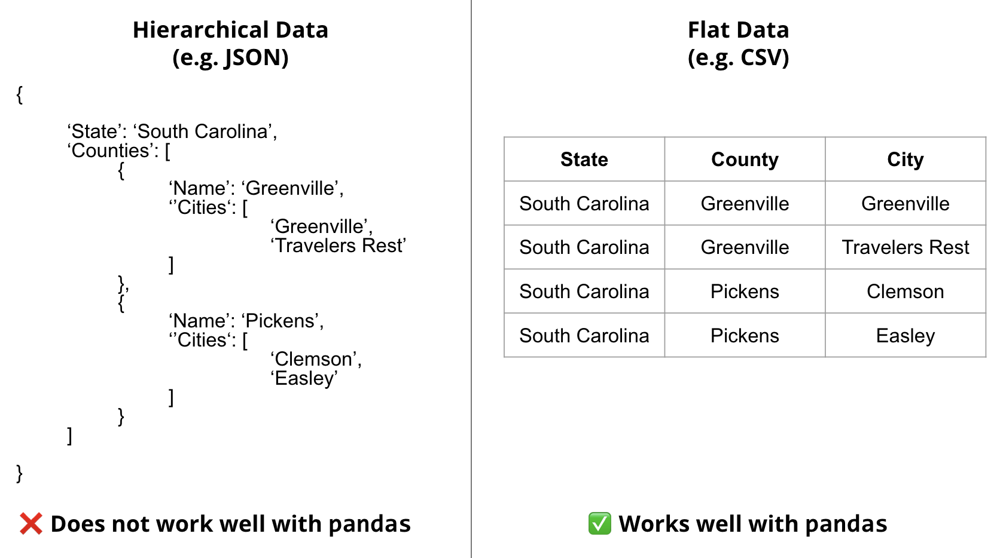

Format is a term used to describe the way data is stored. For example, a single image is stored as a 2D array of pixels. A video is stored as a sequence of images. A sound is stored as a 1D array of samples. A text is stored as a sequence of characters.

Flat Formats
Flat data formats are native to pandas and are the simplest and the most ubiquitous file formats in general.
To avoid data redundancy, data is often factored into multiple tables. For example, in a database of a school, there may be a table for students, a table for teachers, a table for classes, a table for grades, etc. Depending on the question of interest, these tables are then joined together to form a single table.
Comma Separated Values (CSV)
CSV is an open format used to store tabular data. It is a text file where each line is a row of data. In other words, each line is separated by newline character \n. Within a row, each column is separated by a comma ,. The first row is optionally the header row containing the names of the columns.
import pandas as pd url ='https://raw.githubusercontent.com/fahadsultan/csc272/main/data/elections.csv'data = pd.read_csv(url)data.head()
Year
Candidate
Party
Popular vote
Result
%
0
1824
Andrew Jackson
Democratic-Republican
151271
loss
57.210122
1
1824
John Quincy Adams
Democratic-Republican
113142
win
42.789878
2
1828
Andrew Jackson
Democratic
642806
win
56.203927
3
1828
John Quincy Adams
National Republican
500897
loss
43.796073
4
1832
Andrew Jackson
Democratic
702735
win
54.574789
The CSV format has many variations, each different in regard of the separator used. For instance, a particularly popular variant called TSV (Tab Separated Values) uses tab character \t to separate columns instead of a comma. In other variants the column separator can also be a semicolon ; or a pipe |.
Note the use of sep='\t' parameter in pd.read_csv() in the code below:
import pandas as pd url ="https://raw.githubusercontent.com/fahadsultan/csc272/main/data/restaurants.tsv"data = pd.read_csv(url, sep='\t', index_col=0)data.head()
business_id
business_name
business_address
business_city
business_state
business_postal_code
business_latitude
business_longitude
business_location
business_phone_number
...
inspection_score
inspection_type
violation_id
violation_description
risk_category
Neighborhoods
SF Find Neighborhoods
Current Police Districts
Current Supervisor Districts
Analysis Neighborhoods
0
835
Kam Po Kitchen
801 Broadway St
San Francisco
CA
94133
37.797223
-122.410513
POINT (-122.410513 37.797223)
NaN
...
88.0
Routine - Unscheduled
835_20180917_103139
Improper food storage
Low Risk
107.0
107.0
6.0
3.0
6.0
1
905
Working Girls' Cafe'
0259 Kearny St
San Francisco
CA
94108
37.790477
-122.404033
POINT (-122.404033 37.790477)
NaN
...
87.0
Routine - Unscheduled
905_20190415_103114
High risk vermin infestation
High Risk
19.0
19.0
6.0
3.0
8.0
2
1203
TAWAN'S THAI FOOD
4403 GEARY Blvd
San Francisco
CA
94118
37.780834
-122.466590
POINT (-122.46659 37.780834)
1.415576e+10
...
77.0
Routine - Unscheduled
1203_20170803_103120
Moderate risk food holding temperature
Moderate Risk
5.0
5.0
8.0
4.0
11.0
3
1345
Cordon Bleu
1574 California St
San Francisco
CA
94109
37.790683
-122.420264
POINT (-122.420264 37.790683)
NaN
...
81.0
Routine - Unscheduled
1345_20170928_103105
Improper cooling methods
High Risk
105.0
105.0
4.0
3.0
21.0
4
1352
LA TORTILLA
495 Castro St B
San Francisco
CA
94114
37.760954
-122.434935
POINT (-122.434935 37.760954)
1.415586e+10
...
74.0
Routine - Unscheduled
1352_20180620_103177
Non service animal
Low Risk
38.0
38.0
3.0
5.0
5.0
5 rows × 22 columns
Excel Spreadsheet (XLSX)
XLSX is a proprietary format also used to store tabular data. Unlike a CSV, an XLSX is not a plain text file that you can simply read in any text editor. In contrast, an XLSX is a binary file which can be read only in specific software such as Microsft Excel or OpenOffice Calc. An excel spreedsheet does a lot more than just store(tabular) data such as storing formulas, charts and images, etc.
However, for our purposes here, the only distinction between a CSV file and an XLSX file is that a) an XLSX file can contain multiple sheets where each sheet is a table and b) you can read an XLSX file in pandas using the pd.read_excel() function.
pd.read_excel is very similar to pd.read_csv where the first input is the filename or filepath that you want to read. Other inputs such as header, names, index_col are the same as pd.read_csv. The only additional input is:
sheet_name: (default: sheet_name=0) specifies the sheet number or sheet name to be read. Default is 0 which means the first sheet is read. If the file contains multiple sheets, then sheet_name=None should be used.
You can download a sample excel spreadsheet from here
Note that the file contains two sheets: “All Data” and “Just US”
The line of code below reads in just the sheet labeled “Just US” from the spreadsheet, using the sheet_name parameter:
pd.read_excel?
import pandas as pd data = pd.read_excel('../data/Financial Sample.xlsx', sheet_name='US Only')data.head()
Segment
Country
Product
Discount Band
Units Sold
Manufacturing Price
Sale Price
Gross Sales
Discounts
Sales
COGS
Profit
Date
Month Number
Month Name
Year
0
Midmarket
United States of America
Montana
None
615.0
5
15
9225.0
0.0
9225.0
6150.0
3075.0
41974
12
December
2014
1
Government
United States of America
Paseo
None
1143.0
10
7
8001.0
0.0
8001.0
5715.0
2286.0
41913
10
October
2014
2
Channel Partners
United States of America
Paseo
None
912.0
10
12
10944.0
0.0
10944.0
2736.0
8208.0
41579
11
November
2013
3
Enterprise
United States of America
Velo
None
2821.0
120
125
352625.0
0.0
352625.0
338520.0
14105.0
41852
8
August
2014
4
Channel Partners
United States of America
Amarilla
None
1953.0
260
12
23436.0
0.0
23436.0
5859.0
17577.0
41730
4
April
2014
Just as you can write any pandas DataFrame to CSV file using df.to_csv(), you can write any DataFrame to XLSX file using the df.to_excel() function.
Hierarchical (Nested) Formats
Hierarchical data formats are used to store data that is inherently hierarchical. These formats are particularly popular on the internet for exchange of information with web services using APIs (Application Programming Interfaces).
Extensible Markup Language (XML)
XML is a format used to store hierarchical data. Data in XML is stored as a tree structure. This tree is constituent of nodes. Each node has a start tag and an end tag. The start tag is enclosed in angle brackets < and > e.g. <name>. The end tag is also enclosed in angle brackets but it also has a forward slash / after the opening angle bracket e.g. </name>.
The start tag and the end tag together are called an element.
The start tag can optionally contain attributes. Attributes are name-value pairs. The value is enclosed in double quotes ". The start tag can optionally contain child elements. Child elements are enclosed between the start tag and the end tag. The end tag can optionally contain text. Text is the value of the node. The text is enclosed between the start tag and the end tag.
The first node in an XML file is called the root node.
Example of an XML file is
<note><to>Tove</to><from>Jani</from><heading>Reminder</heading><body>Don't forget me this weekend!</body></note>
<breakfast_menu> <food> <name>Belgian Waffles</name> <price>$5.95</price> <description>Two of our famous Belgian Waffles with plenty of real maple syrup</description> <calories>650</calories> </food> <food> <name>Strawberry Belgian Waffles</name> <price>$7.95</price> <description>Light Belgian waffles covered with strawberries and whipped cream</description> <calories>900</calories> </food> <food> <name>Berry-Berry Belgian Waffles</name> <price>$8.95</price> <description>Light Belgian waffles covered with an assortment of fresh berries and whipped cream</description> <calories>900</calories> </food> <food> <name>French Toast</name> <price>$4.50</price> <description>Thick slices made from our homemade sourdough bread</description> <calories>600</calories> </food> <food> <name>Homestyle Breakfast</name> <price>$6.95</price> <description>Two eggs, bacon or sausage, toast, and our ever-popular hash browns</description> <calories>950</calories> </food></breakfast_menu>
It is a text file where each line is a node of data. Each node has a name and a value. The name is separated from the value by a colon. The value is separated from the name by a colon. The first node is the root node. The root node contains the names of the nodes. The root node is separated from the data nodes by a blank line.
In pandas, you can read an XML file using the pd.read_xml() function. The first input to pd.read_xml() is the filename or filepath that you want to read. Other important parameters of the pd.read_xml() function are:
xpath: (default: xpath=None) specifies the path to the node(s) to be read. Default is None which means the entire XML file is read. If you want to read a specific node, then xpath should be used.
namespaces: (default: namespaces=None) specifies the namespaces used in the XML file. Default is None which means no namespaces are used. If the XML file uses namespaces, then namespaces should be used.
encoding: (default: encoding=None) specifies the encoding of the XML file. Default is None which means the encoding is automatically detected. If the XML file uses a specific encoding, then encoding should be used.
errors: (default: errors=None) specifies how to handle errors. Default is None which means the errors are ignored. If the XML file contains errors, then errors should be used.
data = pd.read_xml('https://www.w3schools.com/xml/simple.xml')data.head()
name
price
description
calories
0
Belgian Waffles
$5.95
Two of our famous Belgian Waffles with plenty ...
650
1
Strawberry Belgian Waffles
$7.95
Light Belgian waffles covered with strawberrie...
900
2
Berry-Berry Belgian Waffles
$8.95
Light Belgian waffles covered with an assortme...
900
3
French Toast
$4.50
Thick slices made from our homemade sourdough ...
600
4
Homestyle Breakfast
$6.95
Two eggs, bacon or sausage, toast, and our eve...
950
JavaScript Object Notation (JSON)
JSON is an open data format used to store hierarchical data. JSON data resembles a Python dictionary. It is a text file where each line is a key-value pair. The key is separated from the value by a colon. Similar to a Python dictionary, the value can be a string, a number, a dictionary, a boolean or a list.
JSON data can be oriented in two ways: records and columns.
In the records orientation, each line is a record.
[{"name":"Belgian Waffles","price":"$5.95","description":"Two of our famous Belgian Waffles with plenty of real maple syrup","calories":650},{"name":"Strawberry Belgian Waffles","price":"$7.95","description":"Light Belgian waffles covered with strawberries and whipped cream","calories":900},{"name":"Berry-Berry Belgian Waffles","price":"$8.95","description":"Light Belgian waffles covered with an assortment of fresh berries and whipped cream","calories":900},{"name":"French Toast","price":"$4.50","description":"Thick slices made from our homemade sourdough bread","calories":600},{"name":"Homestyle Breakfast","price":"$6.95","description":"Two eggs, bacon or sausage, toast, and our ever-popular hash browns","calories":950}]
In the columns orientation, each line is a column. The same JSON data can be represented as a table as follows:
{"name":{"0":"Belgian Waffles","1":"Strawberry Belgian Waffles","2":"Berry-Berry Belgian Waffles","3":"French Toast","4":"Homestyle Breakfast"},"price":{"0":"$5.95","1":"$7.95","2":"$8.95","3":"$4.50","4":"$6.95"},"description":{"0":"Two of our famous Belgian Waffles with plenty of real maple syrup","1":"Light Belgian waffles covered with strawberries and whipped cream","2":"Light Belgian waffles covered with an assortment of fresh berries and whipped cream","3":"Thick slices made from our homemade sourdough bread","4":"Two eggs, bacon or sausage, toast, and our ever-popular hash browns"},"calories":{"0":650,"1":900,"2":900,"3":600,"4":950}}
Similar to pd.read_csv, pd.read_excel and pd.read_xml, you can read a JSON file using the pd.read_json() function.
The first input is filepath. There is no sep, header or index_col parameter because the JSON files don’t have flat structure.
import pandas as pd data = pd.read_json('../data/sample.json')data.head()
name
price
description
calories
0
Belgian Waffles
$5.95
Two of our famous Belgian Waffles with plenty ...
650
1
Strawberry Belgian Waffles
$7.95
Light Belgian waffles covered with strawberrie...
900
2
Berry-Berry Belgian Waffles
$8.95
Light Belgian waffles covered with an assortme...
900
3
French Toast
$4.50
Thick slices made from our homemade sourdough ...
600
4
Homestyle Breakfast
$6.95
Two eggs, bacon or sausage, toast, and our eve...
950
Similarly, pandas has a df.to_json() function to write a DataFrame to a JSON file. The parameter orient specifies the orientation of the JSON file. The default is orient='records' which means the JSON file is written in the records orientation. If you want to write the JSON file in the columns orientation, then orient='columns' should be used.
{"name":"Belgian Waffles","price":"$5.95","description":"Two of our famous Belgian Waffles with plenty of real maple syrup","calories":650}
{"name":"Strawberry Belgian Waffles","price":"$7.95","description":"Light Belgian waffles covered with strawberries and whipped cream","calories":900}
{"name":"Berry-Berry Belgian Waffles","price":"$8.95","description":"Light Belgian waffles covered with an assortment of fresh berries and whipped cream","calories":900}
{"name":"French Toast","price":"$4.50","description":"Thick slices made from our homemade sourdough bread","calories":600}
{"name":"Homestyle Breakfast","price":"$6.95","description":"Two eggs, bacon or sausage, toast, and our ever-popular hash browns","calories":950}
('{"name":{"0":"Belgian Waffles","1":"Strawberry Belgian '
'Waffles","2":"Berry-Berry Belgian Waffles","3":"French Toast","4":"Homestyle '
'Breakfast"},"price":{"0":"$5.95","1":"$7.95","2":"$8.95","3":"$4.50","4":"$6.95"},"description":{"0":"Two '
'of our famous Belgian Waffles with plenty of real maple syrup","1":"Light '
'Belgian waffles covered with strawberries and whipped cream","2":"Light '
'Belgian waffles covered with an assortment of fresh berries and whipped '
'cream","3":"Thick slices made from our homemade sourdough bread","4":"Two '
'eggs, bacon or sausage, toast, and our ever-popular hash '
'browns"},"calories":{"0":650,"1":900,"2":900,"3":600,"4":950}}')